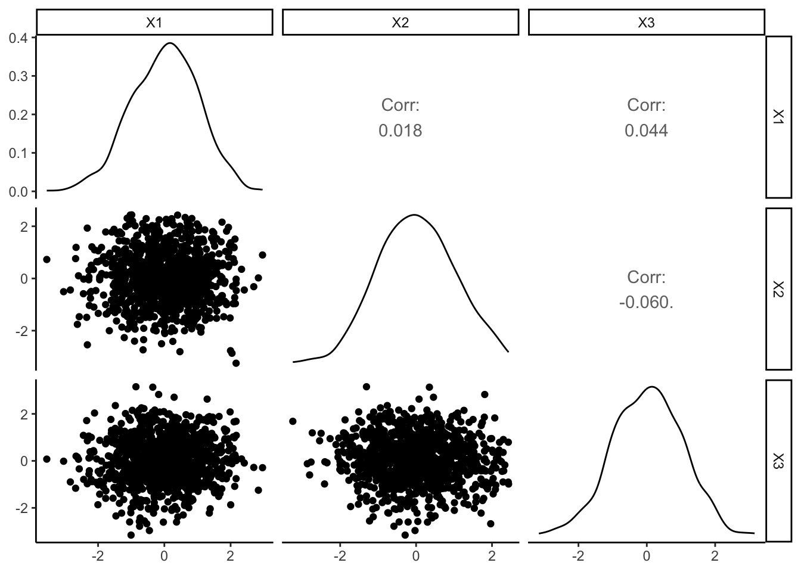
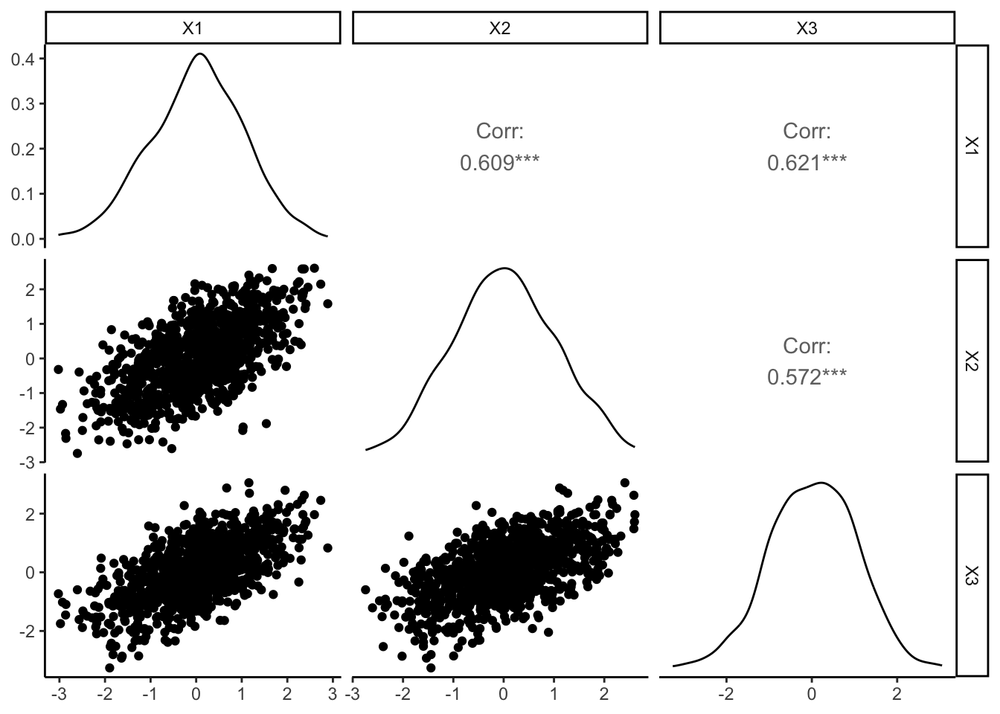
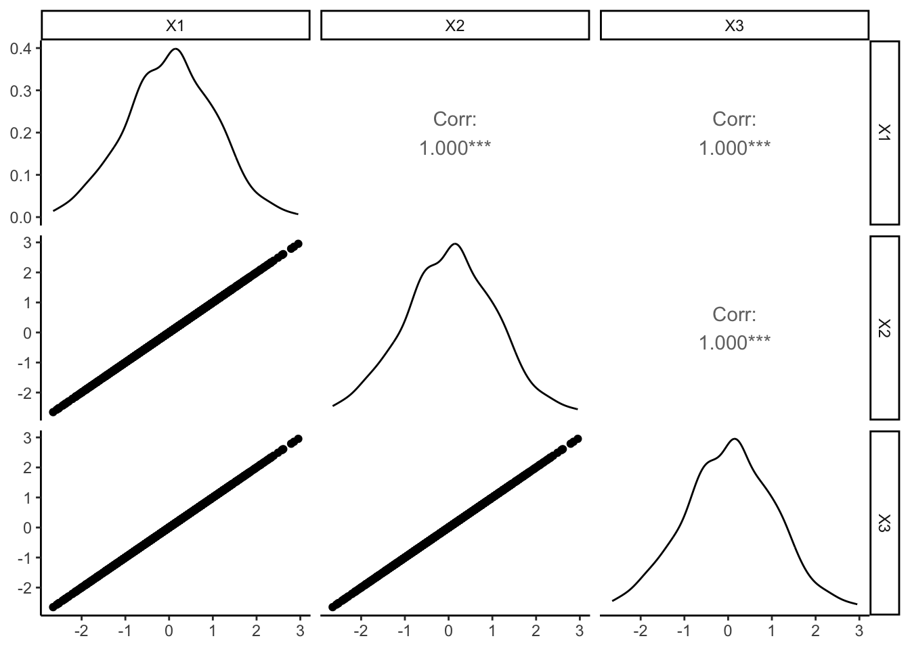
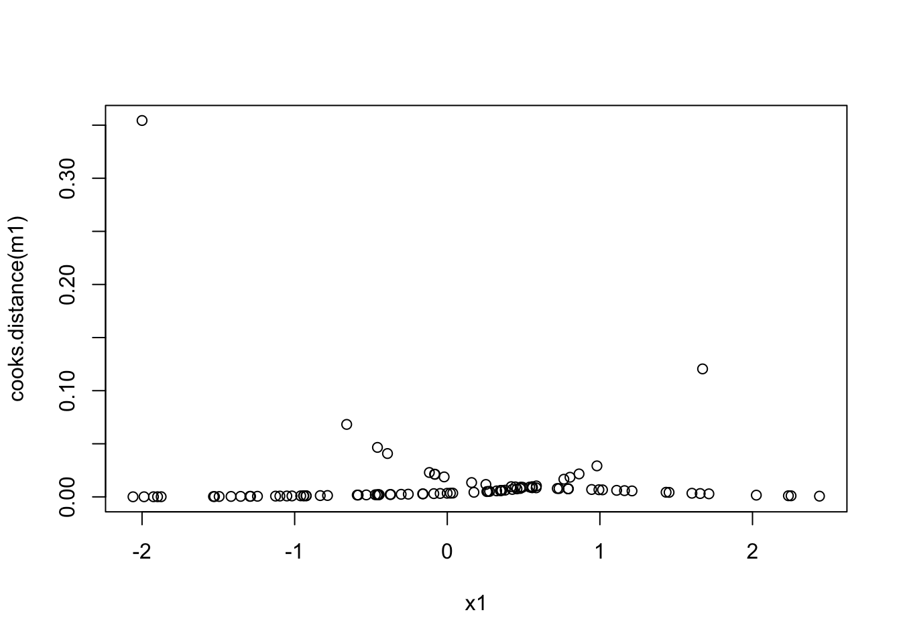
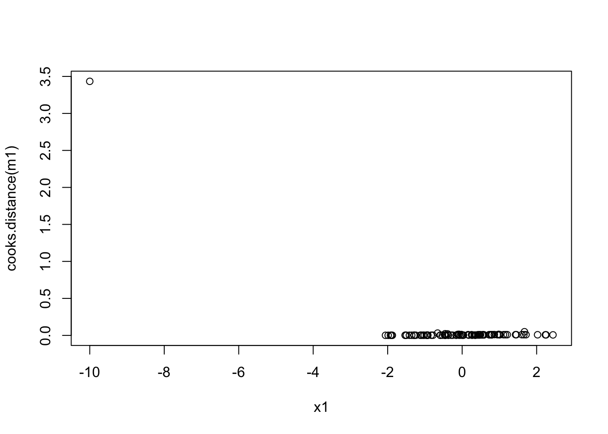
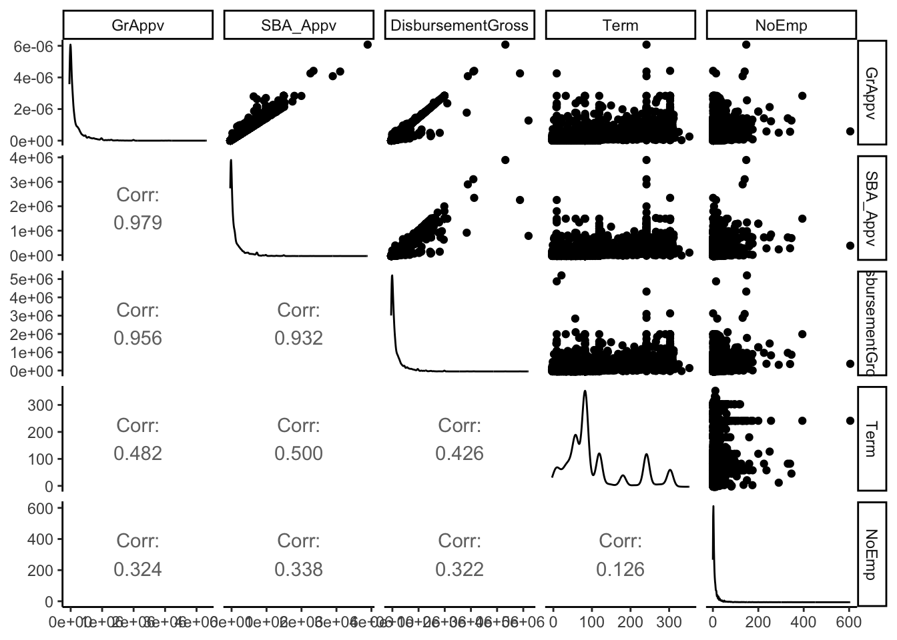
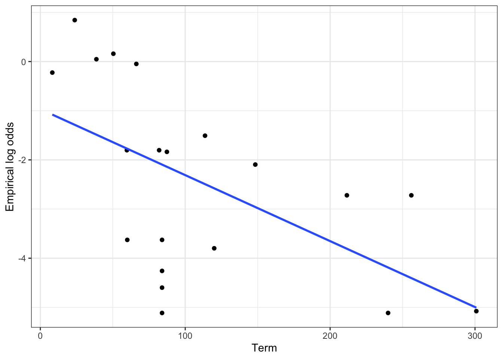
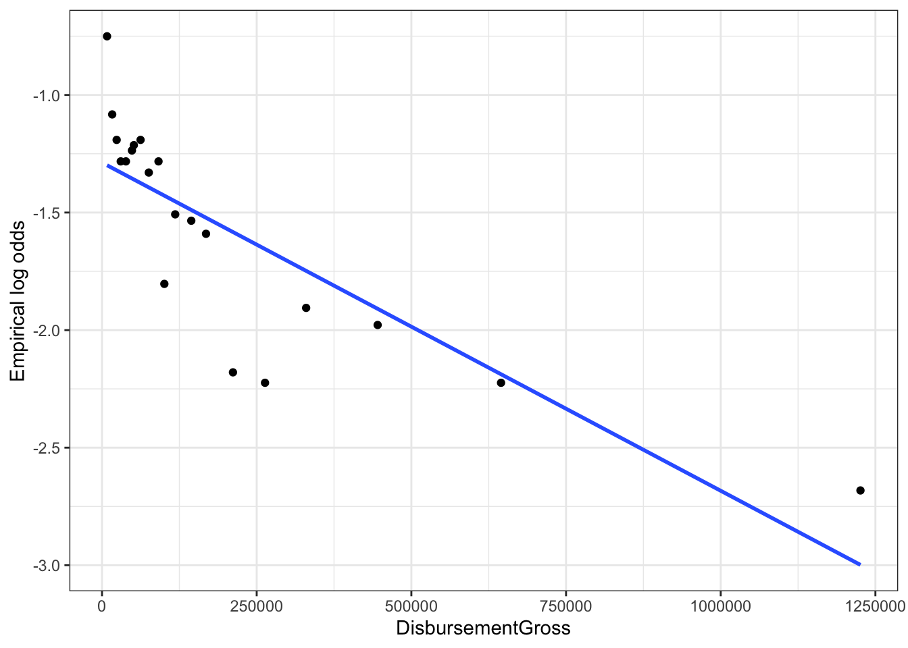
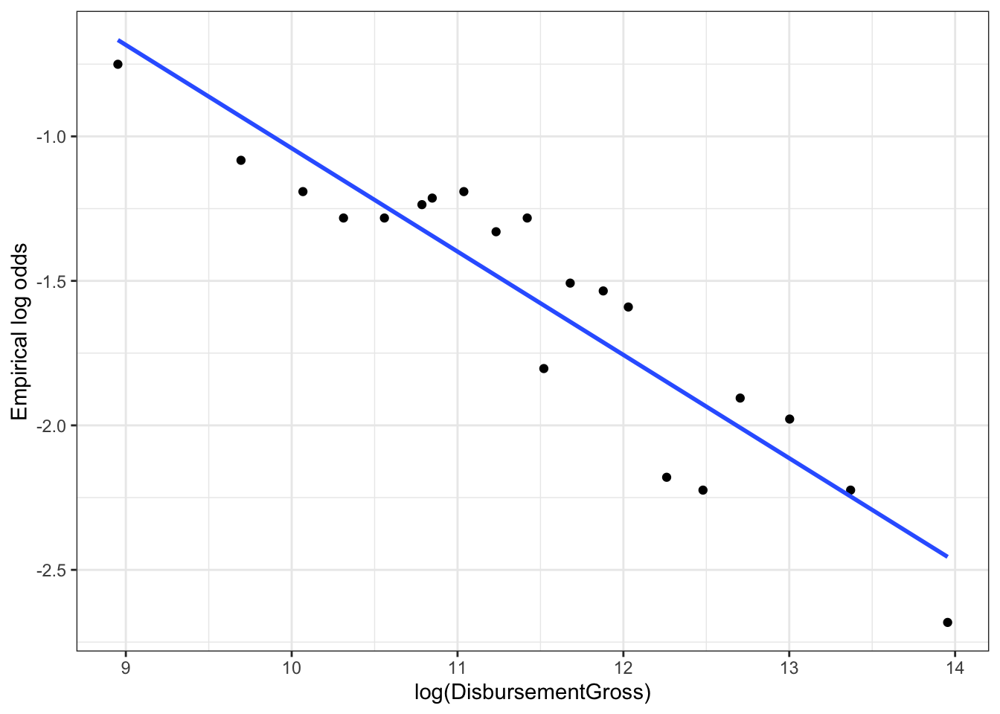

library(mvtnorm) # you will need to install mvtnorm first!
n <- 1000
rho <- 0
beta <- c(0, 1, 1, 1)
# Create the covariance matrix sigma
sigma <- diag(rep(1 - rho, 3)) + matrix(rep(rho, 9), nrow=3)
# Generate Xs from a multivariate normal distribution
X <- rmvnorm(n, sigma = sigma)
# make a design matrix X_complete which includes the initial column of 1s for
# the intercept
X_complete <- cbind(1, X)
# generate probabilities p
p <- exp(X_complete %*% beta)/(1 + exp(X_complete %*% beta))
# generate bernoulli response y
y <- rbinom(n, 1, p)
# fit a model to all the explanatory variables
m1 <- glm(y ~ X, family = binomial)
summary(m1)Class activity: logistic regression diagnostics
Multicollinearity
In the first part of this class activity, we will explore the effects of multicollinearity on a fitted logistic regression model.
The following code generates three correlated explanatory variables. The correlation between the three variables, \(\rho\), is specified by rho in the code. Simulating the explanatory variables uses the rmvnorm(...) function of the mvtnorm package; you may need to install the mvtnorm package.
We then simulate data \(Y_i \sim Bernoulli(\pi_i)\), with
\[\pi_i = \dfrac{e^{\beta_0 + \beta_1 X_{i,1} + \beta_2 X_{i,2} + \beta_3 X_{i,3}}}{1 + e^{\beta_0 + \beta_1 X_{i,1} + \beta_2 X_{i,2} + \beta_3 X_{i,3}}}\]
Questions
- Run the code above with \(\rho = 0\). Then use the code below to check for multicollinearity in the data. Does multicollinearity appear to be a concern?
library(tidyverse)
library(GGally)
data.frame(X) |>
ggpairs() +
theme_classic()Solution:
library(mvtnorm) # you will need to install mvtnorm first!
library(tidyverse)
library(GGally)
set.seed(383)
n <- 1000
rho <- 0
beta <- c(0, 1, 1, 1)
# Create the covariance matrix sigma
sigma <- diag(rep(1 - rho, 3)) + matrix(rep(rho, 9), nrow=3)
# Generate Xs from a multivariate normal distribution
X <- rmvnorm(n, sigma = sigma)
# make a design matrix X_complete which includes the initial column of 1s for
# the intercept
X_complete <- cbind(1, X)
# generate probabilities p
p <- exp(X_complete %*% beta)/(1 + exp(X_complete %*% beta))
# generate bernoulli response y
y <- rbinom(n, 1, p)
# fit a model to all the explanatory variables
m1 <- glm(y ~ X, family = binomial)
summary(m1)
Call:
glm(formula = y ~ X, family = binomial)
Coefficients:
Estimate Std. Error z value Pr(>|z|)
(Intercept) -0.01575 0.08052 -0.196 0.845
X1 1.15546 0.09908 11.662 <2e-16 ***
X2 1.02888 0.09319 11.041 <2e-16 ***
X3 1.09289 0.09548 11.447 <2e-16 ***
---
Signif. codes: 0 '***' 0.001 '**' 0.01 '*' 0.05 '.' 0.1 ' ' 1
(Dispersion parameter for binomial family taken to be 1)
Null deviance: 1385.89 on 999 degrees of freedom
Residual deviance: 941.77 on 996 degrees of freedom
AIC: 949.77
Number of Fisher Scoring iterations: 5data.frame(X) |>
ggpairs() +
theme_classic()
Examining the scatterplots and the sample correlations, there does not appear to be any concerns about multicollinearity in this simulated data. The scatterplots show no relationships between the explanatory variables, and the correlations are all very close to 0.
- When \(\rho = 0\), how do the coefficient estimates compare to the true values in the simulation (\(\beta_0 = 0, \ \beta_1 = 1, \ \beta_2 = 1, \ \beta_3 = 1)\))? Run the code several times to confirm.
Solution:
summary(m1)
Call:
glm(formula = y ~ X, family = binomial)
Coefficients:
Estimate Std. Error z value Pr(>|z|)
(Intercept) -0.01575 0.08052 -0.196 0.845
X1 1.15546 0.09908 11.662 <2e-16 ***
X2 1.02888 0.09319 11.041 <2e-16 ***
X3 1.09289 0.09548 11.447 <2e-16 ***
---
Signif. codes: 0 '***' 0.001 '**' 0.01 '*' 0.05 '.' 0.1 ' ' 1
(Dispersion parameter for binomial family taken to be 1)
Null deviance: 1385.89 on 999 degrees of freedom
Residual deviance: 941.77 on 996 degrees of freedom
AIC: 949.77
Number of Fisher Scoring iterations: 5The estimated coefficients are all pretty close to the true population parameters.
- Report the approximate standard errors of the estimated coefficients (from the
summaryoutput) when \(\rho = 0\).
Solution: The standard errors are around 0.08 - 0.1.
- Now change the correlation \(\rho\) to
rho = 0.6in the simulation, and remake the pairs plot to check for multicollinearity. Does multicollinearity appear to be a concern?
Solution:
set.seed(383)
n <- 1000
rho <- 0.6
beta <- c(0, 1, 1, 1)
# Create the covariance matrix sigma
sigma <- diag(rep(1 - rho, 3)) + matrix(rep(rho, 9), nrow=3)
# Generate Xs from a multivariate normal distribution
X <- rmvnorm(n, sigma = sigma)
# make a design matrix X_complete which includes the initial column of 1s for
# the intercept
X_complete <- cbind(1, X)
# generate probabilities p
p <- exp(X_complete %*% beta)/(1 + exp(X_complete %*% beta))
# generate bernoulli response y
y <- rbinom(n, 1, p)
# fit a model to all the explanatory variables
m2 <- glm(y ~ X, family = binomial)
summary(m2)
Call:
glm(formula = y ~ X, family = binomial)
Coefficients:
Estimate Std. Error z value Pr(>|z|)
(Intercept) -0.03194 0.09089 -0.351 0.725
X1 1.18997 0.14085 8.448 < 2e-16 ***
X2 0.92928 0.12801 7.260 3.88e-13 ***
X3 1.06881 0.13160 8.121 4.61e-16 ***
---
Signif. codes: 0 '***' 0.001 '**' 0.01 '*' 0.05 '.' 0.1 ' ' 1
(Dispersion parameter for binomial family taken to be 1)
Null deviance: 1385.81 on 999 degrees of freedom
Residual deviance: 759.76 on 996 degrees of freedom
AIC: 767.76
Number of Fisher Scoring iterations: 6data.frame(X) |>
ggpairs() +
theme_classic()
With \(\rho = 0.6\), there is higher correlation between the explanatory variables (this is, after all, what the parameter \(\rho\) actually represents!). This correlation is visible in the scatterplots and in the sample correlations.
- Report the approximate standard errors of the estimated coefficients (from the
summaryoutput) when \(\rho = 0.6\). How do these values compare to the results in question 3?
Solution:
summary(m2)
Call:
glm(formula = y ~ X, family = binomial)
Coefficients:
Estimate Std. Error z value Pr(>|z|)
(Intercept) -0.03194 0.09089 -0.351 0.725
X1 1.18997 0.14085 8.448 < 2e-16 ***
X2 0.92928 0.12801 7.260 3.88e-13 ***
X3 1.06881 0.13160 8.121 4.61e-16 ***
---
Signif. codes: 0 '***' 0.001 '**' 0.01 '*' 0.05 '.' 0.1 ' ' 1
(Dispersion parameter for binomial family taken to be 1)
Null deviance: 1385.81 on 999 degrees of freedom
Residual deviance: 759.76 on 996 degrees of freedom
AIC: 767.76
Number of Fisher Scoring iterations: 6With \(\rho = 0.6\), the standard errors of the estimated coefficients have increased, to around 0.12 - 0.14. (Note that the actual numbers aren’t important here – what matters is that increasing the correlation between our explanatory variables has increased the variability of our estimates).
- Finally, change the correlation \(\rho\) to
rho = 1in the simulation, and run the code. What changes?
Solution:
set.seed(383)
n <- 1000
rho <- 1
beta <- c(0, 1, 1, 1)
# Create the covariance matrix sigma
sigma <- diag(rep(1 - rho, 3)) + matrix(rep(rho, 9), nrow=3)
# Generate Xs from a multivariate normal distribution
X <- rmvnorm(n, sigma = sigma)
# make a design matrix X_complete which includes the initial column of 1s for
# the intercept
X_complete <- cbind(1, X)
# generate probabilities p
p <- exp(X_complete %*% beta)/(1 + exp(X_complete %*% beta))
# generate bernoulli response y
y <- rbinom(n, 1, p)
# fit a model to all the explanatory variables
m2 <- glm(y ~ X, family = binomial)
summary(m2)
Call:
glm(formula = y ~ X, family = binomial)
Coefficients: (1 not defined because of singularities)
Estimate Std. Error z value Pr(>|z|)
(Intercept) -1.388e-01 9.794e-02 -1.417 0.156
X1 3.462e+06 2.713e+06 1.276 0.202
X2 -3.462e+06 2.713e+06 -1.276 0.202
X3 NA NA NA NA
(Dispersion parameter for binomial family taken to be 1)
Null deviance: 1386.3 on 999 degrees of freedom
Residual deviance: 665.7 on 997 degrees of freedom
AIC: 671.7
Number of Fisher Scoring iterations: 6data.frame(X) |>
ggpairs() +
theme_classic()
With perfect correlation between the explanatory variables, it is actually impossible to estimate all coefficients. The estimates we do produce are way off, and the standard errors are astronomical.
Influential points
In the second part of this class activity, we will explore the effects of influential points on our fitted regression model. The following code simulates data from the logistic regression model
\[Y_i \sim Bernoulli(\pi_i)\]
\[\log \left( \dfrac{\pi_i}{1 - \pi_i} \right) = -1 + 2 X_i\] then adds a potential outlier at \(X = -2\).
set.seed(412)
# simulate a single explanatory variable from a Normal distribution
x <- rnorm(100)
# create P(Y = 1 | X) for each entry in x
# Here log odds = -1 + 2x
p <- exp(-1 + 2*x)/(1 + exp(-1 + 2*x))
# Finally, simulate a binary response at each x
y <- rbinom(100, 1, p)
x1 <- c(x, -2)
y1 <- c(y, 1)
# Fit a model WITH the unusual observation
m1 <- glm(y1 ~ x1, family = binomial)
summary(m1)
Call:
glm(formula = y1 ~ x1, family = binomial)
Coefficients:
Estimate Std. Error z value Pr(>|z|)
(Intercept) -0.8357 0.2683 -3.114 0.00184 **
x1 1.5962 0.3536 4.514 6.36e-06 ***
---
Signif. codes: 0 '***' 0.001 '**' 0.01 '*' 0.05 '.' 0.1 ' ' 1
(Dispersion parameter for binomial family taken to be 1)
Null deviance: 132.709 on 100 degrees of freedom
Residual deviance: 97.875 on 99 degrees of freedom
AIC: 101.88
Number of Fisher Scoring iterations: 5# Fit a model WITHOUT the unusual observation
m2 <- glm(y ~ x, family = binomial)
summary(m2)
Call:
glm(formula = y ~ x, family = binomial)
Coefficients:
Estimate Std. Error z value Pr(>|z|)
(Intercept) -1.0044 0.2961 -3.392 0.000693 ***
x 1.9328 0.4183 4.620 3.83e-06 ***
---
Signif. codes: 0 '***' 0.001 '**' 0.01 '*' 0.05 '.' 0.1 ' ' 1
(Dispersion parameter for binomial family taken to be 1)
Null deviance: 130.684 on 99 degrees of freedom
Residual deviance: 89.004 on 98 degrees of freedom
AIC: 93.004
Number of Fisher Scoring iterations: 5Questions
- Run the code several times. How does the potential outlier impact the parameter estimates?
Solution: The estimated coefficients tend to be closer to the true values (-1 and 2) when the outlier is removed.
Cook’s distance
One way to check for influential points is with a measure called Cook’s distance. For a logistic regression model with coefficients \(\beta_0, \beta_1,...,\beta_k\), the Cook’s distance for the \(i\)th observation is defined as
\[D_i = \dfrac{(Y_i - \widehat{\pi}_i)^2}{(k+1) \widehat{\pi}_i(1 - \widehat{\pi}_i)} \cdot \dfrac{h_i}{(1 - h_i)^2}\]
where \(h_i\) is a metric called leverage. The precise definition of \(h_i\) is outside the scope of this class; the key point is that higher values of \(h_i\) mean that the \(i\)th observation is “unusual” in the \(X\) direction.
So what is Cook’s distance doing? It is combining distance in the \(Y\) direction – that is, \((Y_i - \widehat{\pi}_i)^2\) – with distance in the \(X\) direction (the leverage \(h_i\)). The precise mathematical definition isn’t essential in 214; what matters is that for a point to be influential, it needs to be unusual in both the \(X\) and \(Y\) directions.
- The code below creates a plot of Cook’s distance for the model with the potential outlier. How does Cook’s distance for the potential outlier (\(X = -2\)) compare to the other values of Cook’s distance in the plot?
plot(x1, cooks.distance(m1))
Solution: Cook’s distance is noticeably higher for the potential outlier than for the other points.
- Play with the location of the potential outlier (e.g., try \(X = -5\), or \(X = -10\)). Then re-run the code several times. How does the location of the outlier change its influence on the parameter estimates? What about the value of Cook’s distance?
Solution:
set.seed(412)
# simulate a single explanatory variable from a Normal distribution
x <- rnorm(100)
# create P(Y = 1 | X) for each entry in x
# Here log odds = -1 + 2x
p <- exp(-1 + 2*x)/(1 + exp(-1 + 2*x))
# Finally, simulate a binary response at each x
y <- rbinom(100, 1, p)
x1 <- c(x, -10)
y1 <- c(y, 1)
# Fit a model WITH the unusual observation
m1 <- glm(y1 ~ x1, family = binomial)
summary(m1)
Call:
glm(formula = y1 ~ x1, family = binomial)
Coefficients:
Estimate Std. Error z value Pr(>|z|)
(Intercept) -0.6511 0.2302 -2.829 0.004674 **
x1 0.8832 0.2554 3.457 0.000545 ***
---
Signif. codes: 0 '***' 0.001 '**' 0.01 '*' 0.05 '.' 0.1 ' ' 1
(Dispersion parameter for binomial family taken to be 1)
Null deviance: 132.71 on 100 degrees of freedom
Residual deviance: 117.02 on 99 degrees of freedom
AIC: 121.02
Number of Fisher Scoring iterations: 5# Fit a model WITHOUT the unusual observation
m2 <- glm(y ~ x, family = binomial)
summary(m2)
Call:
glm(formula = y ~ x, family = binomial)
Coefficients:
Estimate Std. Error z value Pr(>|z|)
(Intercept) -1.0044 0.2961 -3.392 0.000693 ***
x 1.9328 0.4183 4.620 3.83e-06 ***
---
Signif. codes: 0 '***' 0.001 '**' 0.01 '*' 0.05 '.' 0.1 ' ' 1
(Dispersion parameter for binomial family taken to be 1)
Null deviance: 130.684 on 99 degrees of freedom
Residual deviance: 89.004 on 98 degrees of freedom
AIC: 93.004
Number of Fisher Scoring iterations: 5plot(x1, cooks.distance(m1))
As the outlier becomes more extreme (e.g., (-10, 1)), we see that the estimated coefficients are further from the true values. Cook’s distance also increases for the outlier, demonstrating that Cook’s distance is capturing the impact of the outlier on the fitted model.
Putting it all together
In the second part of this class activity, we will work with a dataset on US small business loans.
The US Small Business Administration (SBA) is a government agency dedicated to helping support small businesses. The SBA provides loans to small businesses, but some businesses default on their loan (i.e., fail to pay it back). Researchers at the SBA are interested in predicting whether a business will default on the loan, and they have collected a random sample of 4991 different loans.
To predict default rates, the SBA would like to build a model which accounts for the loan amount, the term of the loan, the size of the business, whether the business is urban or rural, and whether the business is new. They have collected the following variables for each loan in the data:
Default: whether the business defaulted on the loan (1 = yes, 0 = no)UrbanRural: 1 if business is in urban area, 2 if business is in rural area, 0 if unknownNewExist: 1 if business already existed, 2 if business is new, 0 if unknownTerm: Length of the loan term (months)NoEmp: Number of employees of the business before receiving the loanGrAppv: Gross amount of loan approved by the bank, in dollarsSBA_Appv: Amount of the loan guaranteed by the SBA, in dollarsDisbursementGross: The amount of money disbursed (loaned), in dollars
You can load the SBA data into R with
sba <- read.csv("https://sta214-f25.github.io/class_activities/sba_small.csv")Questions
- Before building a model, we should check for potential multicollinearity in the explanatory variables. Which of the explanatory variables may be highly correlated?
Solution: I would expect the three variables which all deal with loan amount (gross approval, SBA approval, and gross disbursement) to all be correlated.
To explore correlation in the quantitative explanatory variables, we can use a pairs plot (a matrix of scatterplots and correlations). The code below will create a nicely formatted pairs plot using the ggpairs function in the GGally package.
sba |>
select(GrAppv, SBA_Appv, DisbursementGross,
Term, NoEmp) |>
ggpairs(upper = list(continuous = "points"),
lower = list(continuous =
GGally::wrap(ggally_cor, stars = F))) +
theme_classic()
- Run the code to create the pairs plot. Which variables appear highly correlated? Which variables will be easiest to interpret? Choose a subset of variables with which to predict loan default in the SBA data, and explain your choice. (You may create new variables if you wish)
Solution: As predicted, we do see high correlations between the three loan amount variables. Personally I think that gross disbursement – the amount of money the applicant actually received – is the most meaningful for assessing loan defaults.
Now let’s explore the shape assumption with empirical logit plots. The code below creates an empirical logit plot for Term:
logodds_plot <- function(data, reg_formula, group,
num_bins = 5){
var_names <- all.vars(reg_formula)
if(length(var_names) != 2){
stop("Only one variable can appear on the x-axis")
}
if(!is.numeric(data[[var_names[2]]])){
stop("The explanatory variable must be numeric")
}
if(n_distinct(data[[var_names[1]]]) != 2){
stop("The response variable must be binary")
}
data <- data |>
select(all_of(var_names), {{group}}) |>
drop_na()
dat <- model.frame(reg_formula, data)
xname <- colnames(dat)[2]
yname <- colnames(dat)[1]
colnames(dat) <- c("y", "x")
if(any(is.infinite(dat$x))){
stop(paste("There are non-finite values in", xname))
}
if(!missing(group)){
dat <- dat |>
mutate({{group}} := as.factor(data |> pull({{group}})))
}
dat |>
arrange({{group}}, x) |>
group_by({{group}}) |>
mutate(bin = rep(1:num_bins,
each=ceiling(n()/num_bins))[1:n()]) |>
group_by(bin, {{group}}) |>
summarize(x = mean(x),
prop = (sum(y) + 0.5)/(n() + 1),
num_obs = n(),
.groups = "drop") |>
mutate(logodds = log(prop/(1 - prop))) |>
ggplot(aes(x = x,
y = logodds,
color = {{group}})) +
geom_point() +
geom_smooth(se=F, method="lm", formula = y ~ x) +
theme_bw() +
labs(x = xname,
y = "Empirical log odds")
}
logodds_plot(sba, Default ~ Term,
num_bins = 20)
- Does the shape assumption seem reasonable? Create empirical logit plots for some other quantitative explanatory variables, and experiment with transformations if needed.
Solution: I think the shape assumption looks ok for loan term. However, there are some issues for gross disbursement:
logodds_plot(sba, Default ~ DisbursementGross,
num_bins = 20)
A log transform seems appropriate here:
logodds_plot(sba, Default ~ log(DisbursementGross),
num_bins = 20)
- Fill in the code below to fit a logistic regression model to predict
Default, using your explanatory variables from question 11, and any transformations from question 12. Make sure categorical variables are coded as categorical variables!
Solution: You may have chosen different variables than I did; here is the model I fit:
m1 <- glm(Default ~ Term + log(DisbursementGross) +
log(NoEmp + 1) + factor(UrbanRural),
data = sba, family = binomial)
summary(m1)
Call:
glm(formula = Default ~ Term + log(DisbursementGross) + log(NoEmp +
1) + factor(UrbanRural), family = binomial, data = sba)
Coefficients:
Estimate Std. Error z value Pr(>|z|)
(Intercept) -1.377730 0.421793 -3.266 0.001089 **
Term -0.021842 0.001186 -18.418 < 2e-16 ***
log(DisbursementGross) 0.095888 0.039273 2.442 0.014625 *
log(NoEmp + 1) -0.173139 0.050458 -3.431 0.000601 ***
factor(UrbanRural)1 1.142645 0.109620 10.424 < 2e-16 ***
factor(UrbanRural)2 0.875918 0.145918 6.003 1.94e-09 ***
---
Signif. codes: 0 '***' 0.001 '**' 0.01 '*' 0.05 '.' 0.1 ' ' 1
(Dispersion parameter for binomial family taken to be 1)
Null deviance: 4716.4 on 4990 degrees of freedom
Residual deviance: 3822.1 on 4985 degrees of freedom
AIC: 3834.1
Number of Fisher Scoring iterations: 6- Check again for multicollinearity using VIFs. Do you see any issues? If so, make further adjustments to your model.
Solution: The VIFs are all close to 1, indicating no issues with multicollinearity.
library(car) # you may need to install this package first!
vif(m1) GVIF Df GVIF^(1/(2*Df))
Term 1.035319 1 1.017506
log(DisbursementGross) 1.230186 1 1.109137
log(NoEmp + 1) 1.212046 1 1.100930
factor(UrbanRural) 1.029055 2 1.007186Finally, let’s check Cook’s distance for influential observations. The largest Cook’s distance is given by
max(cooks.distance(m1))[1] 0.0194573- We are typically concerned about influential points if Cook’s distance is larger than 0.5 or 1. Should we be concerned here?
Solution: Based on the Cook’s distance, there are no concerning points.